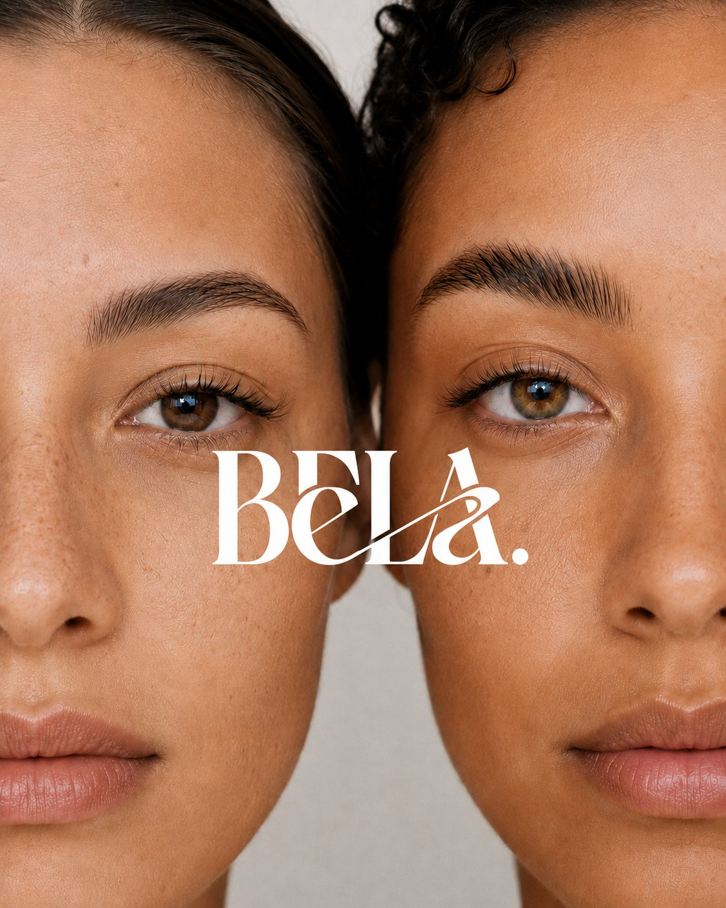
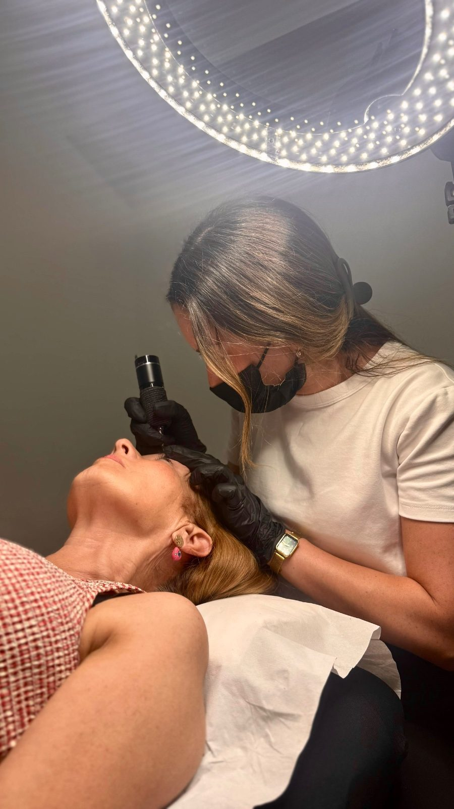
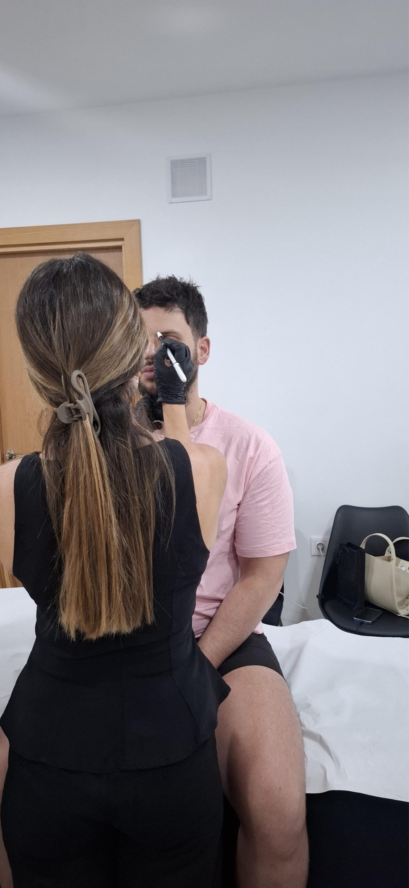
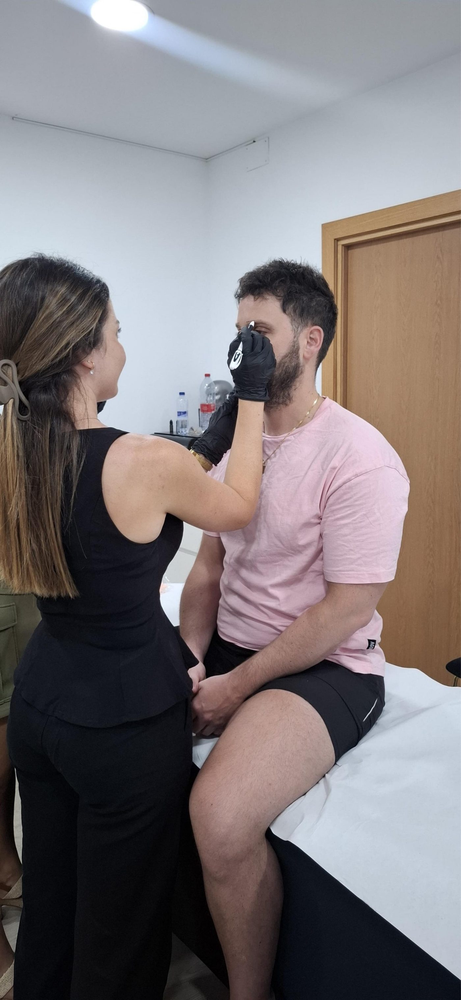
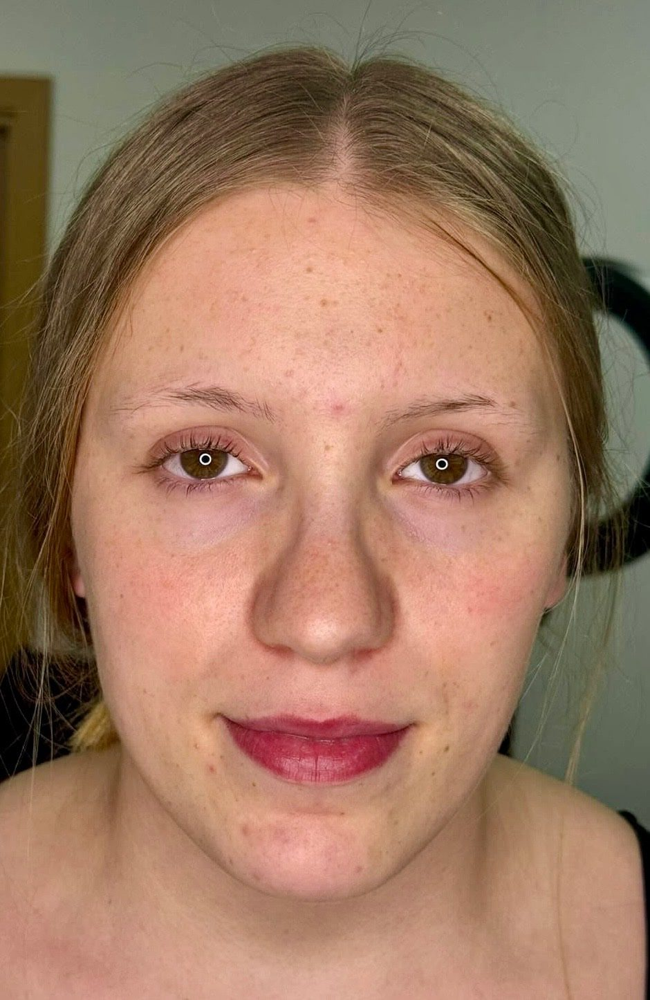
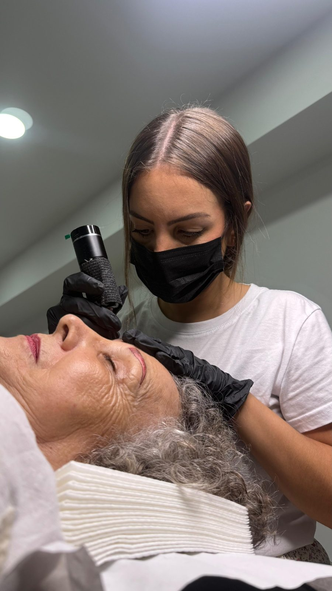
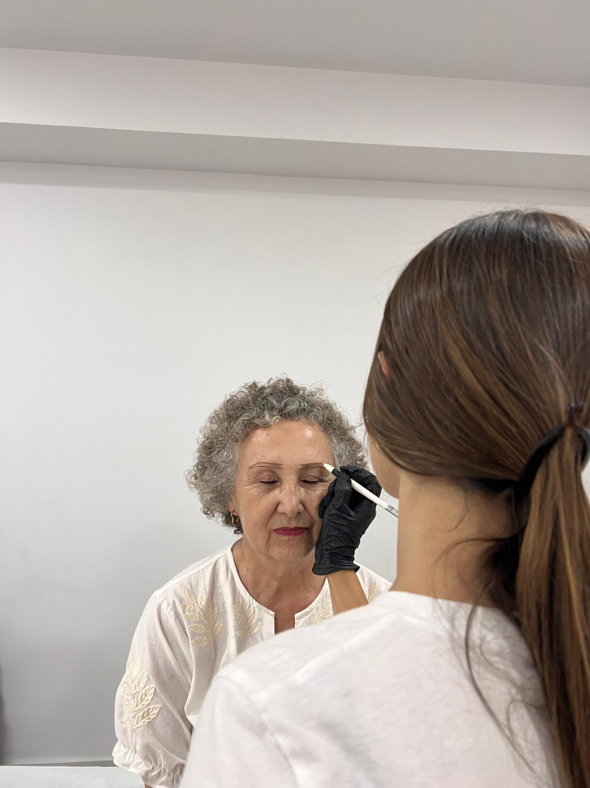
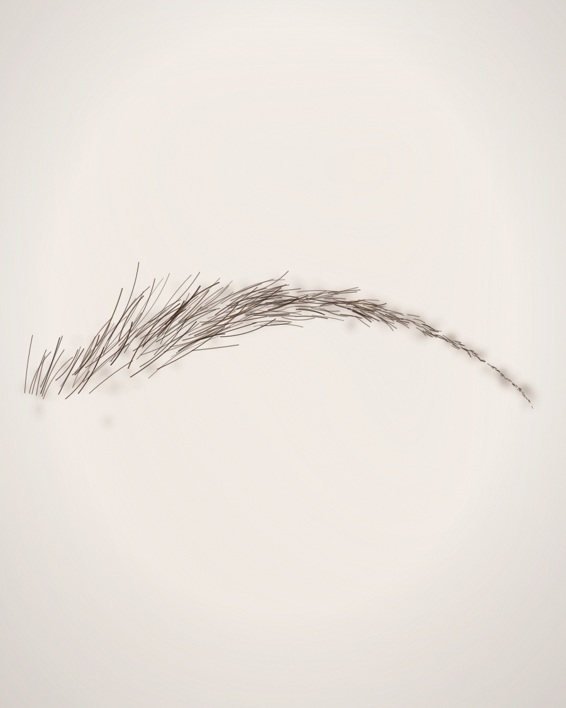
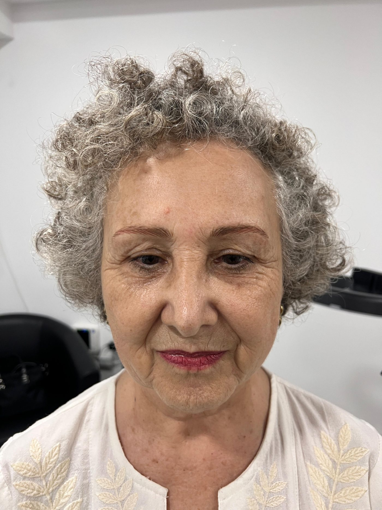

Micropigmentación

Bela Brow Studio & Beauty · solo con cita previa


Cejas que
 puestas.
puestas.
Micropigmentación pelo a pelo con técnica Hair Stroke, en un estudio de dos hermanas donde solo hay una clienta cada vez.
Tres formas de trabajar la ceja. Cuál te toca no se decide por catálogo: se decide mirando tu vello, tu piel y lo que quieres conseguir.
Arrastra la fotografía para ver el cambio. Cada caso es distinto: el resultado depende de tu piel y de tu vello de partida.






Ninguna cita empieza por el dermógrafo. Primero se mira, se escucha y se dibuja.

El estudio previo y el diseño ocupan lo que tengan que ocupar.
Escuchamos qué te gustaría conseguir y valoramos tu piel, tu vello y la forma de partida. De ahí sale si el Hair Stroke es lo tuyo o no.
Dibujamos la ceja sobre tu rostro, a partir de tus facciones y proporciones. No se pigmenta nada hasta que la sientas tuya.
Pelo a pelo, siguiendo la dirección de tu vello, con la precisión que pide una técnica que busca pasar desapercibida.
Te damos la pauta de cuidados por escrito y estamos pendientes de cómo cicatriza. El retoque se valora cuando toca, no antes.
Arrastra la fila. No hay precios cerrados: cada presupuesto sale del estudio previo, porque no todas las cejas piden el mismo trabajo. Ver la carta completa




Tres cosas que no negociamos, y que explican por qué una cita dura lo que dura.
Pelo a pelo, siguiendo la dirección de tu vello. La idea no es que se note, es que parezca tuya.
Sin solapar citas. El estudio previo y el diseño ocupan lo que tengan que ocupar.
Agujas y consumibles desechables, y la pauta de cuidados por escrito al salir.
Desde el principio sabíamos que queríamos hacer las cosas de una manera muy concreta: con tiempo, dedicación y poniendo especial atención en cada persona y en cada detalle. Por eso el diseño ocupa tanto como la propia técnica.
cómo trabajamos


Si te reconoces en alguno de estos casos, el Hair Stroke probablemente sea para ti.
resolver mis dudasCejas sin una forma clara o con la cola desdibujada. Diseñamos un contorno equilibrado que respeta tus facciones y se mantiene todos los días.
Por depilación excesiva, por el paso del tiempo o simplemente porque siempre tuviste poco vello. Recuperamos volumen pelo a pelo.
Huecos, cicatrices o pérdida de pelo por distintas circunstancias. El Hair Stroke rellena esas zonas sin que se note dónde empieza lo tuyo.
Ninguna cara es simétrica. Trabajamos la forma para compensar diferencias de altura, grosor o dirección entre una ceja y otra.
Si te da miedo que se note artificial, esta es exactamente nuestra forma de trabajar: que el resultado se integre de forma armoniosa en tu rostro.
Dejar de maquillarte las cejas cada mañana y que el resultado siga siendo el mismo al salir del gimnasio o de la piscina.
Y si te queda alguna, mandánosla por WhatsApp con una foto de tus cejas con luz natural.
Es una técnica de micropigmentación avanzada con la que se recrean pelos de forma individual. En lugar de rellenar la ceja con color, se dibujan trazos que imitan el pelo real y se integran con el tuyo, de manera que el resultado es natural y definido a la vez.
Ese es precisamente el objetivo: que no se note. No buscamos cambiar tus rasgos, sino trabajar sobre ellos para realzarlos, de forma que el resultado se integre de manera armoniosa en tu rostro.
Cada tratamiento se presupuesta después de la valoración, porque el trabajo no es el mismo en todos los casos. Escríbenos por WhatsApp contándonos qué te gustaría conseguir y te damos un precio cerrado, sin compromiso.
El laminado trabaja tu propio vello: lo ordena y fija la dirección del pelo para conseguir un aspecto más uniforme y con efecto lifting, sin pigmento ni agujas. La micropigmentación añade trazos donde no hay pelo. Son tratamientos distintos y compatibles entre sí.
En muchos casos sí, pero hay que ver el trabajo previo antes de comprometerse. Mándanos una foto con luz natural y sin maquillaje por WhatsApp y te decimos con sinceridad qué se puede hacer.
Sí. Embarazo y lactancia, piel con lesiones o dermatitis activa en la zona, tendencia a queloides y algunos tratamientos o medicaciones. Lo revisamos siempre en la valoración previa, antes de reservar la sesión.
Somos dos hermanas con una pasión en común y muchas ganas de crear algo juntas. Lo que empezó como una ilusión compartida fue tomando forma hasta convertirse en un proyecto con el que hoy nos sentimos totalmente identificadas.
Nos apasiona el mundo de la belleza, pero sobre todo creemos en una belleza natural, cuidada y personalizada.


Cuéntanos qué te gustaría conseguir y te decimos qué tratamiento encaja mejor contigo. Sin compromiso.
pedir cita